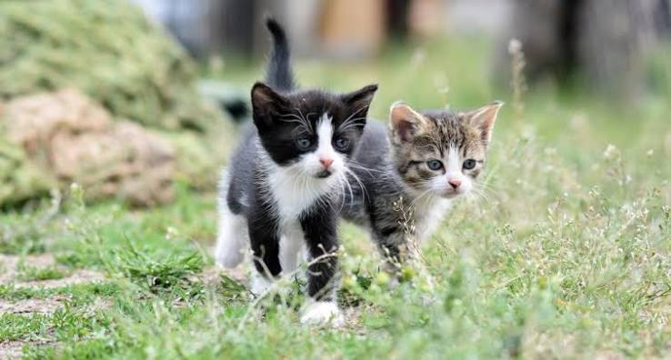

นิสัยแมวแต่ละสายพันธุ์ | ความต่างของแมวแต่ละสายพันธุ์ purina.co.th https://www.purina.co.th เรียนรู้ความแตกต่างของแมวแต่ละสายพันธุ์ก่อนตัดสินใจเลี้ยง รวมข้อมูลนิสัยและการดูแลที่นี่. เริ่มเลี้ยงแมวอย่างไรให้ถูกวิธี และเหมาะสมกับความต้องการของเจ้าเหมียว. ข้อมูลครบถ้วน. เข้าใจนิสัยแมว. คำแนะนำจากผู้เชี่ยวชาญ. เลี้ยงง่ายขึ้น. เหมาะกับมือใหม่. เลือกง่ายขึ้น. เทียบสายพันธุ์.